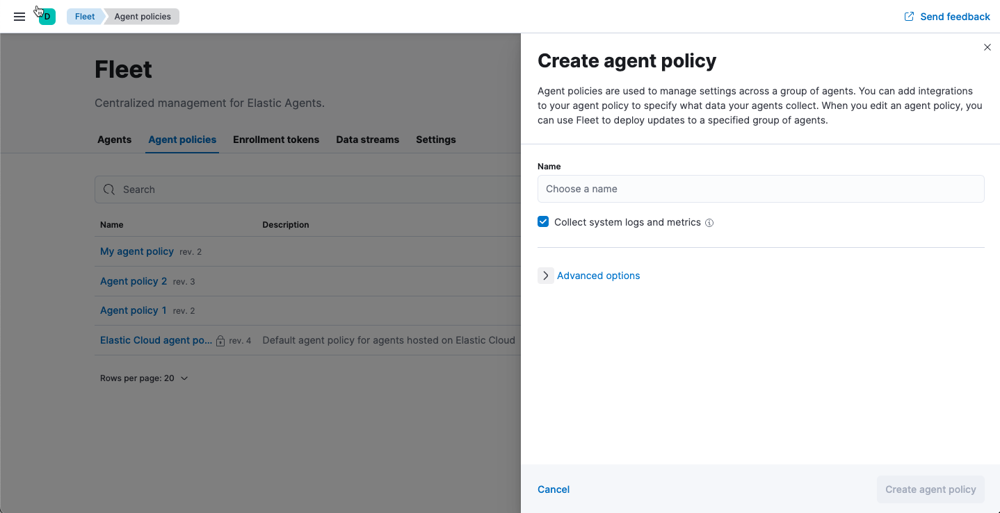
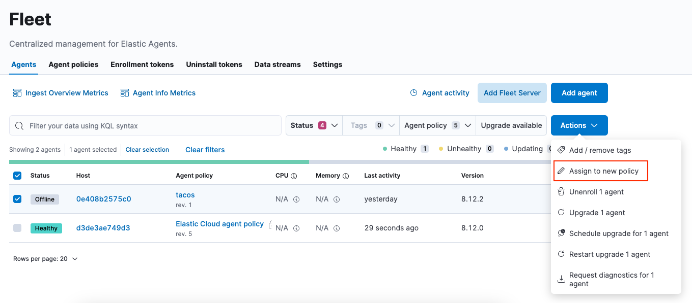

Elastic Agent policiesedit
A policy is a collection of inputs and settings that defines the data to be collected by an Elastic Agent. Each Elastic Agent can only be enrolled in a single policy.
Within an Elastic Agent policy is a set of individual integration policies. These integration policies define the settings for each input type. The available settings in an integration depend on the version of the integration in use.
Fleet uses Elastic Agent policies in two ways:
- Policies are stored in a plain-text YAML file and sent to each Elastic Agent to configure its inputs.
- Policies provide a visual representation of an Elastic Agents configuration in the Fleet UI.
Policy benefitsedit
Elastic Agent policies have many benefits that allow you to:
- Apply a logical grouping of inputs aimed for a particular set of hosts.
- Maintain flexibility in large-scale deployments by quickly testing changes before rolling them out.
- Provide a way to group and manage larger swaths of your infrastructure landscape.
For example, it might make sense to create a policy per operating system type: Windows, macOS, and Linux hosts. Or, organize policies by functional groupings of how the hosts are used: IT email servers, Linux servers, user work-stations, etc. Or perhaps by user categories: engineering department, marketing department, etc.
Policy typesedit
In most use cases, Fleet provides complete central management of Elastic Agents. However some use cases, like running in Kubernetes or using our hosted Elasticsearch Service on Elastic Cloud, require Elastic Agent infrastructure management outside of Fleet. With this in mind, there are two types of Elastic Agent policies:
- regular policy: The default use case, where Fleet provides full central management for Elastic Agents. Users can manage Elastic Agent infrastructure by adding, removing, or upgrading Elastic Agents. Users can also manage Elastic Agent configuration by updating the Elastic Agent policy.
-
hosted policy: A policy where something else provides central management for Elastic Agents. For example, in Kubernetes, adding, removing, and upgrading Elastic Agents should be configured directly in Kubernetes. Allowing Fleet users to manage Elastic Agents would conflict with any Kubernetes configuration.
Hosted policies also apply when using our hosted Elasticsearch Service on Elastic Cloud. Elastic Cloud is responsible for hosting Elastic Agents and assigning them to a policy. Platform operators, who create and manage Elastic deployments can add, upgrade, and remove Elastic Agents through the Elastic Cloud console.
Hosted policies display a lock icon in the Fleet UI, and actions are restricted. The following table illustrates the Fleet user actions available to different policy types:
| Fleet user action | Regular policy | Hosted policy |
|---|---|---|
|
|
|
|
|
|
|
|
|
|
|
|
|
|
|
|
|
|
|
|


Create a policyedit
To manage your Elastic Agents and the data they collect, create a new policy:
- In Kibana, go to Management → Fleet.
-
In Fleet, click Agent policies → Create agent policy. Name your policy. All other fields are optional and can be modified later. By default, each policy enables the system integration, which collects system information and metrics.
 -
Create the agent policy:
- To use the UI, click Create agent policy.
- [beta] This functionality is in beta and is subject to change. The design and code is less mature than official GA features and is being provided as-is with no warranties. Beta features are not subject to the support SLA of official GA features. To use the Fleet API, click Preview API request and run the request.
Also see Create an agent policy without using the UI.
Add an integration to a policyedit
Policies consist of one or more integrations. To add a new integration to a policy:
- In Fleet, click Agent policies. Click the name of the policy you want to add an integration to.
- Click Add integration.
- Search for and select an integration.
- Click Add <Integration>.
-
Name the integration and add any required configuration variables.
Integration policy names must be globally unique across all agent policies.
-
Save the integration policy as part of the larger Elastic Agent policy:
- To use the UI, click Save and continue.
- [beta] This functionality is in beta and is subject to change. The design and code is less mature than official GA features and is being provided as-is with no warranties. Beta features are not subject to the support SLA of official GA features. To use the Fleet API, click Preview API request and run the request.
Fleet distributes this new policy to all Elastic Agents that are enrolled in the Elastic Agent policy.
After the policy has finished applying, the selected integration will be running on the host and communicating with the Elastic Agent.
Apply a policyedit
You can apply policies to one or more Elastic Agents. To apply a policy:
- In Fleet, click Agents.
-
Select the Elastic Agents you want to assign to the new policy.
After selecting one or more Elastic Agents, click Assign to new policy under the Actions menu.
Unable to select multiple agents? Confirm that your subscription level supports selective agent policy reassignment in Fleet. For more information, refer to Elastic Stack subscriptions.
- Select the Elastic Agent policy from the dropdown list, and click Assign policy.
The Elastic Agent status indicator and Elastic Agent logs indicate that the policy is being applied. It may take a few minutes for the policy change to complete before the Elastic Agent status updates to "Healthy".
Edit or delete an integration policyedit
Integrations can easily be reconfigured or deleted. To edit or delete an integration policy:
- In Fleet, click Agent policies. Click the name of the policy you want to edit or delete.
-
Search or scroll to a specific integration. Open the Actions menu and select Edit integration or Delete integration.
Editing or deleting an integration is permanent and cannot be undone. If you make a mistake, you can always re-configure or re-add an integration.
Any saved changes are immediately distributed and applied to all Elastic Agents enrolled in the given policy.
Copy a policyedit
Policy definitions are stored in a plain-text YAML file that can be downloaded or copied to another policy:
- In Fleet, click Agent policies. Click the name of the policy you want to copy or download.
-
To copy a policy, click Actions → Copy policy. Name the new policy, and provide a description. The exact policy definition is copied to the new policy.
Alternatively, view and download the policy definition by clicking Actions → View policy.
Edit or delete a policyedit
You can change high-level configurations like a policy’s name, description, default namespace, and agent monitoring status as necessary:
- In Fleet, click Agent policies. Click the name of the policy you want to edit or delete.
-
Click the Settings tab, make changes, and click Save changes
Alternatively, click Delete policy to delete the policy. Existing data is not deleted. Any agents assigned to a policy must be unenrolled or assigned to a different policy before a policy can be deleted.
Change the output of a policyedit
Assuming your Elastic Stack subscription level supports per-policy outputs, you can change the output of a policy to send data to a different output.
- In Fleet, click Settings and view the list of available outputs. If necessary, click Add output to add a new output with the settings you require. For more information, refer to Output settings.
- Click Agent policies. Click the name of the policy you want to change, then click Settings.
-
Set Output for integrations and (optionally) Output for agent monitoring to use a different output, for example, Logstash. You might need to scroll down to see these options.
Unable to select a different output? Confirm that your subscription level supports per-policy outputs in Fleet.

- Save your changes.
Any Elastic Agents enrolled in the agent policy will begin sending data to the specified outputs.
Add a Fleet Server to a policyedit
If you want to connect multiple agents to a specific on-premises Fleet Server, you can add that Fleet Server to a policy.

When the policy is saved, all agents assigned to the policy are configured to use the new Fleet Server as the controller.
Make sure that the Elastic Agents assigned to this policy all have connectivity to the Fleet Server that you added. Lack of connectivity will prevent the Elastic Agent from checking in with the Fleet Server and receiving policy updates, but the agents will still forward data to the cluster.
Policy scaling recommendationsedit
A single instance of Fleet supports a maximum of 500 Elastic Agent policies. If more policies are configured, UI performance might be impacted.